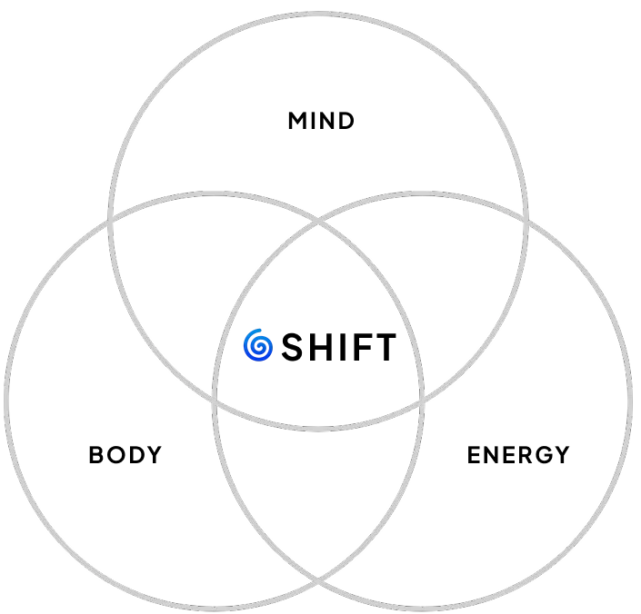
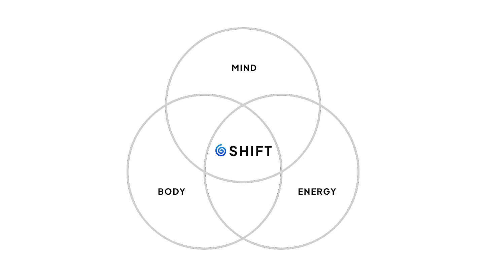

Three minutes a day. Same trigger every day. A ladder of containers from the 1-Day Reset to the Bali retreat, built around the mind, the body, and the energy.
Begin Where You Are Or Look At The Whole Ladder
Hero VSL preview. Records to 4-7 minutes on Day 1 of install, embeds across the home and the program landings.
You've been close to meditation, presence, inner work for a while. You've read the books, listened to the podcasts, started a few practices that didn't stick. What's needed is a structural container that holds the practice in place, not another framework to add to the pile.
You've done this work before. The retreat, the practice, the morning sit. Then life moved and the practice didn't. The fix is rarely more discipline. The fix is a small structural change in how the trigger is anchored to your day.
You build, you lead, you carry weight. The cost of distraction inside the working day is now bigger than the cost of the practice. The 5-minute morning protocol is the smallest move with the largest carry-over into how decisions get made the rest of the day.
The 1-Day Reset is the entry. The 21-day course is for after. The membership is the recurring layer. The Bali retreat is once a year. The 1:1 plus teacher-training track is for the practitioners who want the practice as their work. Stage-specific, confirmed at intake.
A single day inside the framework. The mind reset, the body reset, the energy reset, in that order. Most people leave with a working version of the practice they can run on their own. This is the natural entry point, the place where the methodology becomes a daily move.
Twenty-one days is the threshold most people need before the practice runs on its own. The course walks through one structural move at a time. By the end of the third week, the trigger does the work without the reminder.
The recurring layer. Weekly live sits, a small community, a place to bring the questions that show up after the methodology settles into your week. The membership is the structural container for everyone who finished the Reset or the course and wants the practice to stay rooted.
Once a year. A small cohort, in the place where the practice runs all day, every day. Four to seven days, methodology-led, intentional. The most concentrated version of the work in the entire ladder. By application, capacity-limited by design.
For the freedom seekers who want this practice as their work, not their morning. The 1:1 mentorship is bespoke, founder-led. The teacher-training track is for the practitioners ready to hold the practice for other people. By application.
You don't have to pick the tier on Day 1. Most people start with the 1-Day Reset and walk into the next container when the timing is right. The application below routes the conversation to the tier that fits the stage you're in.

Gabriele moved from feeling lost to finding his purpose by meditation, anchored to a three-minute daily practice. From there, the work expanded: live transformations, retreats, the mind-body-energy framework, and the move to Bali for the practice (not for the backdrop).
The fix is rarely more time. The fix is less ambition about the time. Three minutes. Same trigger. Every day.
Twenty-eight thousand people through live transformations. The pattern repeats. The work is the practice. Named testimonials swap in from the existing archive at Day 1 of install.
Named participant testimonials from the 1-Day Reset and the broader transformations archive populate this block before public launch. The 28,000+ footprint provides the source pool. Currently held as a placeholder so the swap is deliberate, not back-filled.
The most common pattern across the practitioners I've worked with is the same: the practice didn't fail, the trigger did. Most meditation attempts try to add the practice on top of an existing routine. The fix is to anchor the practice to a trigger you already have. Three minutes. Coffee, the walk to your desk, the first time you sit down. After three weeks, the trigger does the work.
The 1-Day Reset is the natural entry. Most people start there and walk into the next container when the timing is right. If the Reset has already happened for you or the practice is already running daily, the 21-day course or the membership is likely the right next step. The application form routes the conversation either way.
Three parts. The mind, the body, the energy. The mind is where the noise lives. The body is where the noise stores itself, which is what most people miss. The energy is what carries the noise through the day, or doesn't. The practice resets all three. The fastest version to teach is one day, in person or virtual, the 1-Day Reset.
Once a year. Small cohort. Four to seven days in Bali, in the place where the practice runs all day, every day. By application. The retreat is the most concentrated version of the work in the entire ladder. Application opens when it opens, the waitlist fills first.
Stage-specific and confirmed at intake. The 1-Day Reset is the entry tier and the most accessible. The course, the membership, and the retreat are application-based. The 1:1 plus teacher training is bespoke and the most concentrated version of the work. The fit conversation matters more than the figure at this level.
Bali, Indonesia. The work runs from here. The retreat happens here. The live sits inside the membership run on a schedule that respects practitioners across time zones, North America and Europe primarily.
Because thirty minutes is the part most people quit. It feels like too much, the schedule fights back, the practice loses to the calendar. Three minutes wins the calendar argument before it starts. Anchor it to a trigger you already have and the practice does itself. Most of what changes in the first three weeks happens because the practice didn't get skipped.
The application takes ninety seconds. Apply for the closest tier and the routing happens during the conversation. The fit conversation is part of the application, not a separate sales step.
The application takes ninety seconds. The route map comes back with the tier that fits the stage you're in. No setter calls. No back-and-forth. A conversation, not a pitch.
Three questions about where you are now. The route map comes back instantly.
Ninety seconds for the application. After you submit, you'll land on the tier that fits the stage you're in, with a clear next step.
Take The Application Or Look At The Whole Ladder90-second application · invitational routing · no setter calls
The practice is the work.